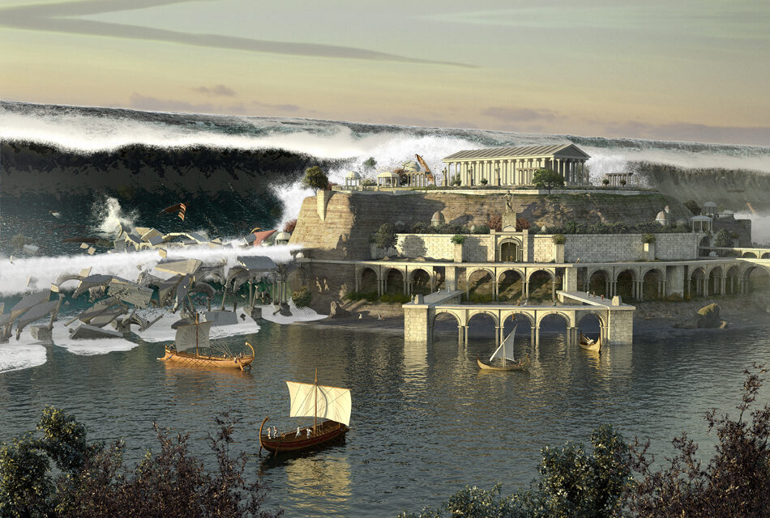
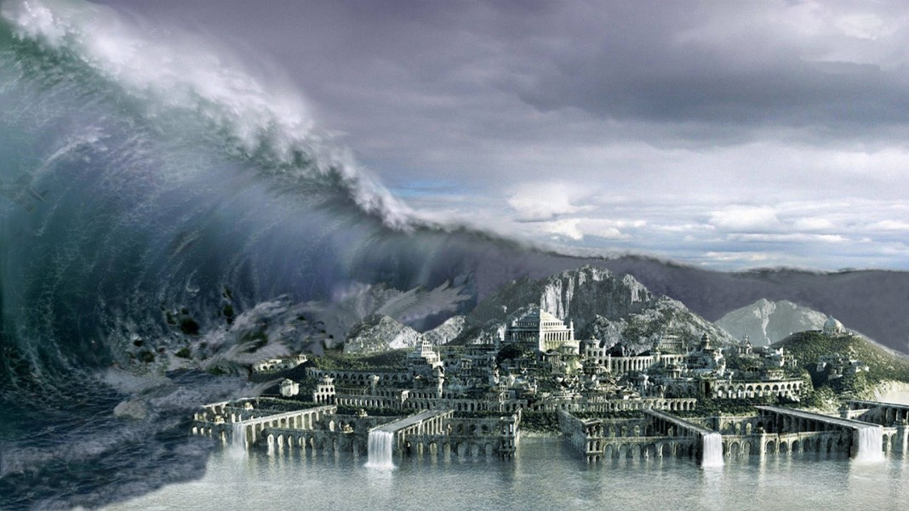

Historia
La Atlántida era más grande que Asia menor y Libia juntas, y
había existido unos 9,000 años antes de que Platón
escribiera al respecto. Sus habitantes eran los
descendientes de Poseidón y Clito y eran una sociedad
pacífica. Su territorio era fértil y extenso, con abundancia
en materiales valiosos. Pero a pesar de todas esas riquezas,
sus gobernantes no veían satisfechas sus ambiciones y
comenzaron con una campaña de conquistas de vastos
territorios con el único objetivo de expandirse alrededor
del Mediterraneo. Según el relato, dominaron Libia y tambien
la península Itálica pero no pudieron contra los Atenienses.
Entonces la ira de los Dioses, entre ellos Poseidón, se hizo
evidente contra los atlantes, y destruyeron su hogar por
medio de un terremoto o un tsunami. Sus ruinas quedaron
ahogadas en el fondo del océano.


Datos curiosos
- El nombre de Atlántida se deriva de Atlante, un rey que supuestamente la gobernó. En griego se llama Atlantis Nesos y en latín Atalantis Insula.
- Era rica en recursos naturales, con abundantes alimentos. Sus montañas la protegían de los vientos del norte.
- Se desconoce el número de sus habitantes. Platón solo dice que su cantidad «era innumerable».
- Rodeado por una muralla de piedra, dentro de la isla había dos islotes anulares y uno central. En la isla anular mayor estaban el hipódromo y los cuarteles militares. En la isla anular menor había templos y espacios deportivos. Su muralla exterior era de estaño. Un canal pasaba por debajo de la mayor de las islas hasta llegar a un gran puerto interior.
- Platón reporta la existencia de varios jardines con elefantes y caballos así como dos fuentes de agua fría y caliente.
- De acuerdo con la tradición egipcia, la Atlántida media entre 600 y 400 km2.


- En la isla central estaban el palacio real y el templo de Poseidón. Su muralla exterior era de oricalco, un metal precioso y mítico.
- Estaba dividida en diez regiones administrativas al mando de diez hombres virtuosos. En cabezaba el sistema una monarquía hereditaria.
- Los habitantes practicaban la religión griega con sus rituales y sacrificios. Poseidón, el dios del mar, era el patrón de la ciudad.